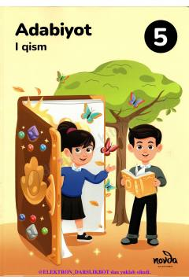

A55-sinf o'quvchilari uchun mo'ljallangan adabiyot fanidan darslik.
Ushbu darslik 5-sinf o'quvchilari uchun mo'ljallangan bo'lib, adabiyot fanining asosiy tushunchalari va badiiy asarlar bilan tanishtiradi. Kitobda adabiyot olamiga sayohat, xayol va yolg'on o'rtasidagi farqlar hamda badiiy to'qima haqida qiziqarli ma'lumotlar keltirilgan.